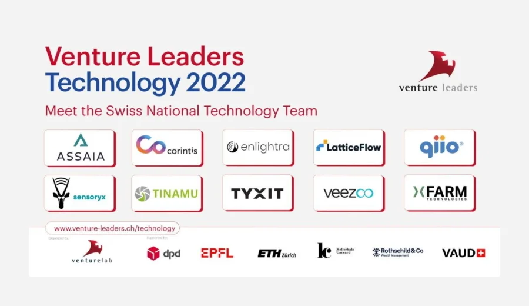

An expert jury has chosen qiio and 9 other elite Swiss Startups to travel
to California’s Silicon Valley to meet with investors and industry leaders during April 3-9, 2022 in San
Francisco. As part of Switzerland’s “Venture Leaders Technology 2022” organized by Venturelab, the program
promotes top Swiss startups ready to take the first steps toward international expansion.
A jury of professional investors and technology experts looked through a record-breaking 180 applications
and chose the 10 most promising startups to pitch their companies in Silicon Valley, one of the world’s most
important technology hubs. For one week in April, the Swiss National Startup Team will accelerate their
expansion into the US market and strengthen their business network through meetings and workshops with
investors and industry leaders.
The startups cover a range of solutions—from IoT and computer chips to artificial intelligence to cloud
computing—and a variety of sectors such as industrial process control to agriculture, music, and airport
operations.
The program is supported by dpd Switzerland, EPF Lausanne, ETH Zurich, Kellerhals Carrard, Rothschild & Co,
and the Canton of Vaud.
Read more about the announcement from Venturelabs here.